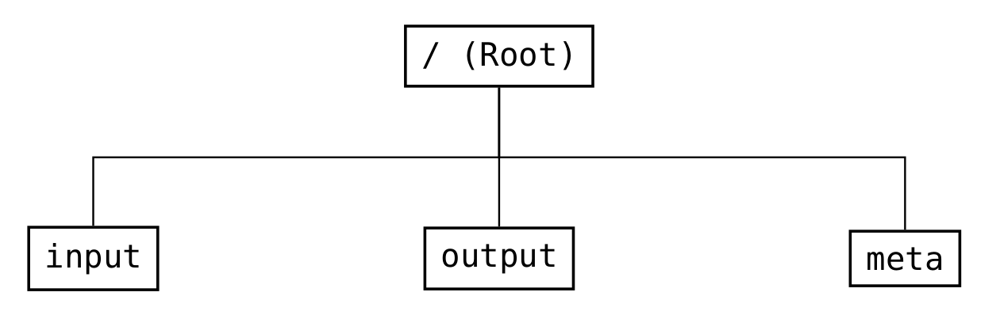
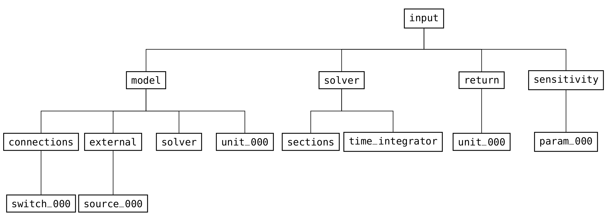
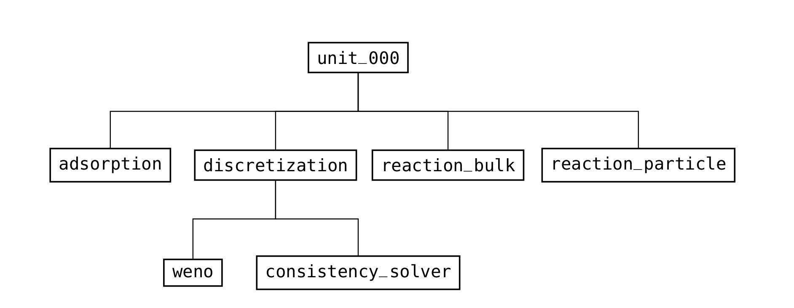
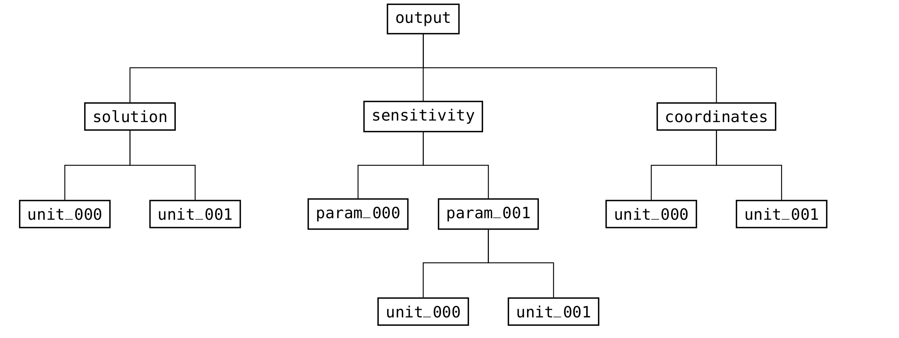

Introduction#
Global structure#
The global structure (see Fig. 11) is divided into three parts: input, output, and meta.
Every valid CADET file needs an input group (see Fig. 12) which contains all relevant information for simulating a model.
It does not need an output (see Fig. 14) or meta (see Fig. 11) group, since those are created when results are written.
Whereas the output group is solely used as output and holds the results of the simulation, the meta group is used for input and output.
Details such as file format version and simulator version are read from and written to the meta group.
If not explicitly stated otherwise, all datasets are mandatory. By convention all group names are lowercase, whereas all dataset names are uppercase. Note that this is just a description of the file format and not a detailed explanation of the meaning of the parameters. For the latter, please refer to the corresponding sections in the previous chapter.

Fig. 11 Structure of the groups in the root group of the file format#

Fig. 12 High-level structure of the groups in the input part of the file format#

Fig. 13 Structure of the groups in a column unit operation (/input/model group)#

Fig. 14 Structure of the groups in the output part of the file format#
Notation and identifiers#
Reference volumes are denoted by subscripts:
\(m_{IV}^{3}\) Interstitial volume
\(m_{MP}^{3}\) Bead mobile phase volume
\(m_{SP}^{3}\) Bead solid phase volume
Common notation and identifiers that are used in the subsequent description are listed in Table 4.
Identifier |
Meaning |
|---|---|
NCOMP |
Number of components of a unit operation |
NTOTALCOMP |
Total number of components in the system (sum of all unit operation components) |
NPARTYPE |
Number of particles types of a unit operation |
NBOUNDi |
Number of bound states of component i of the current particle type |
NTOTALBOUND |
Total number of bound states of the current particle type (sum of all bound states of all components) |
NSTATES |
Maximum of the number of bound states for each component of a particle type |
NREACT |
Number of reactions (in bulk volume or in the current particle type) |
NDOF |
Total number of degrees of freedom of the current unit operation model or system of unit operations |
NSEC |
Number of time integration sections |
PARAM_VALUE |
Value of a generic unspecified parameter |
Ordering of multi dimensional data#
Some model parameters, especially in certain binding models, require multi dimensional data. Since CADET only reads one dimensional arrays, the layout of the data has to be specified (i.e., the way how the data is linearized in memory). The term “xyz-major” means that the index corresponding to xyz changes the slowest.
For instance, suppose a model with \(2\) components and \(3\) bound states has a “state-major” dataset. Then, the requested matrix is stored in memory such that all components are listed for each bound state (i.e., the bound state index changes the slowest and the component index the fastest):
comp0bnd0, comp1bnd0, comp0bnd1, comp1bnd1, comp0bnd2, comp1bnd2
This linear array can also be represented as a \(3 \times 2\) matrix in “row-major” storage format:
comp0bnd0, comp1bnd0
comp0bnd1, comp1bnd1
comp0bnd2, comp1bnd2
Section dependent model parameters#
Some model parameters (see Table 5) can be assigned different values for each section. For example, the velocity a column is operated with could differ in the load, wash, and elution phases. Section dependency is recognized by specifying the appropriate number of values for the parameters (see Length column in the following tables). If a parameter depends on both the component and the section, the ordering is section-major.
For instance, the Length field of the parameter VELOCITY reads \(1 / NSEC\) which means that it is not recognized as section dependent if only \(1\) value (scalar) is passed. However, if NSEC many values (vector) are present, it will be treated as section dependent.
Note that all components of component dependent datasets have to be section dependent (e.g., you cannot have a section dependency on component \(2\) only while the other components are not section dependent).
Dataset |
Component dependent |
Section dependent |
|---|---|---|
COL_DISPERSION |
✓ |
✓ |
FILM_DIFFUSION |
✓ |
✓ |
PAR_DIFFUSION |
✓ |
✓ |
PAR_SURDIFFUSION |
✓ |
✓ |
VELOCITY |
✓ |